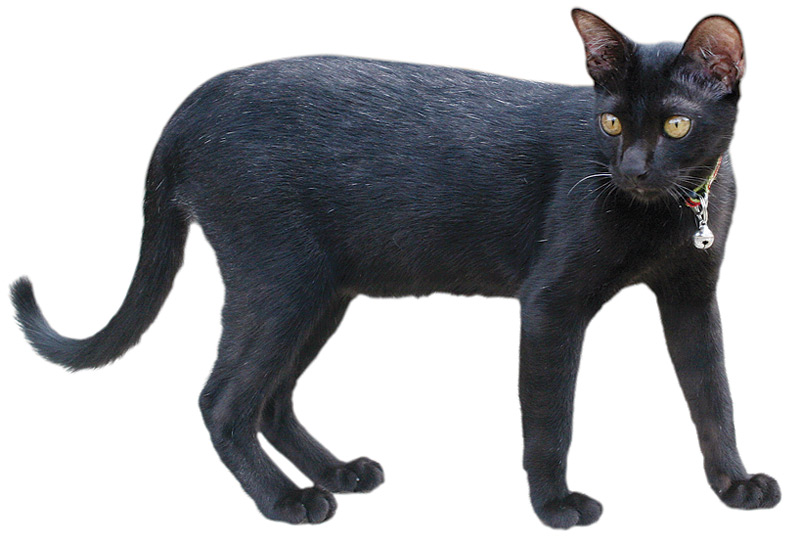

Pet Channel
| |
| แซมเสวตร |
|  |
ลักษณะทั่วไป แมวแซมเสวตร [แซมสะเหฺวด] แปลว่า "แซมสีขาว"เป็นแมวชนิดหนึ่งที่ปรากฏใน ตำราแมว ตั้งแต่สมัยกรุงศรีอยุธยา แมวนี้มีขนสีดำ แซมด้วยสีขาวไปทั้งตัว แต่ขนบางและค่อนข้างสั้น รูปร่างบางเพรียว ตามีสีเขียวเหมือนแสงหิ่งห้อยซึ่งแท้จริงแล้วแซมเสวตรนี้มิใช่สายพันธุ์ หากแต่เป็นแมวโกนจาที่ป่วยด้วยภาวะ "Fever Coat" อันส่งผลต่อการสร้างเม็ดสีที่ขน เมื่อหายดีขนก็จะกลับมาดำเป็นแมวโกนจาตามเดิม โดยลักษณะทั่วไปของแซมเสวตรจะตรงกันกับแมวโกนจาแต่มีขนสีขาวแซม ในปี พ.ศ. 2548 ได้ค้นพบแมวแซมเสวตรตัวแรกชื่อ "แซม" และตัวที่สองชื่อ "โค้ก" ของอารีย์ อยู่บำรุง และตัวที่สามชื่อ "ข้าวตอก" ของวีระศักดิ์ สร้อยทอง และมีการพบแมวลักษณะนี้อีกหลายครั้ง ต่อมาได้มีคำอธิบายว่าแซมเสวตรคือแมวโกนจาที่เกิดความผิดปกติด้วยภาวะ "Fever Coat" หรือ "แมวป่วย" ซึ่งเกิดขึ้นเมื่อแม่แมวตั้งท้องแล้วมีไข้ อันส่งผลต่อการสร้างเม็ดสีที่ขนของลูกแมวในครรภ์ทำให้มีสีขาวแซม ขนของมันจะกลับเข้าสู่ภาวะปกติภายใน 4-6 เดือนซึ่งการมีขนสีขาวแซมยังพบได้ในแมวโตขนสีดำที่ถูกกัด ป่วย หรือร่างกายอ่อนแอ |